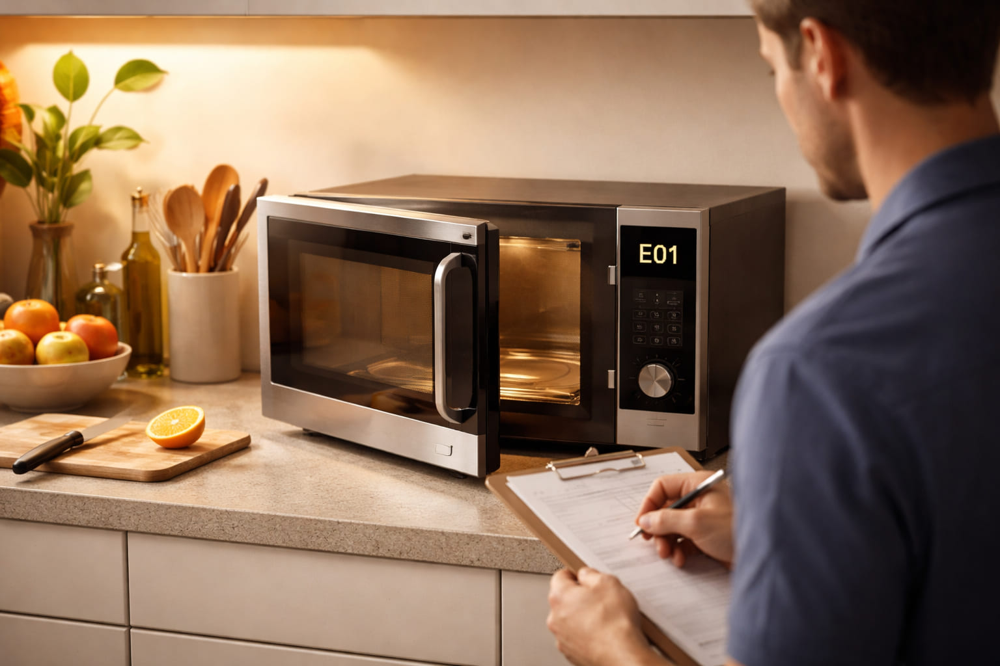

A housewife from Batkhela called me in December 2012. She said "My Samsung microwave is showing E-01 error. It will not start. The door looks fine but nothing happens." I asked her to check if the door was closing properly. She found that her child had put a small spoon in the door latch area. She removed the spoon. The door clicked properly. The microwave started working. She was very happy. She said "You saved me from buying a new microwave before Eid."
Brand: Samsung | Error: E-01 | Fix: Remove obstruction from door latch
Microwave oven error codes help diagnose problems with heating, sensors, door switches, and control boards. Understanding these codes can save you from costly repairs or dangerous situations. This guide covers all major brands available in Pakistan.
DANGER - High Voltage Warning: Microwave ovens contain high voltage components up to 5000 volts that can retain dangerous charge even when unplugged. Only qualified technicians should attempt internal repairs. Never open the microwave case unless you are trained and have discharged the high voltage capacitor.
A restaurant owner from Hafizabad called me in March 2014. He said "My LG microwave is showing E3 error. The microwave runs but the food is not heating properly. Sometimes it overheats." I asked him to check the temperature sensor. He found that the sensor was covered with grease from cooking. He cleaned it carefully. The microwave started working normally. He said "You saved my business. I use this microwave every day for my restaurant."
Brand: LG | Error: E3 | Fix: Clean temperature sensor
| Error Code | Meaning | Common Fix | Difficulty |
|---|---|---|---|
E01 / E1 | Door switch error | Check door, latch, switches | Easy |
E02 / E2 | Keypad / touch panel error | Clean keypad, replace membrane | Easy |
E03 / E3 | Temperature sensor error | Check thermistor resistance | Medium |
E04 / E4 | Magnetron / high voltage | Professional service required | Hard |
E05 / E5 | Humidity sensor error | Clean sensor, check connections | Medium |
A school teacher from Tando Adam called me in July 2016. She said "My Dawlance microwave is showing E04 error. The microwave runs but there is a loud buzzing sound and no heat." I told her this is a magnetron problem and she should not try to fix it herself. She called a professional technician. The technician replaced the magnetron. The microwave worked again. She said "Thank you for warning me about the danger. I would have tried to open it myself."
Brand: Dawlance | Error: E04 | Fix: Magnetron replacement by technician
E-01 Door switch
E-02 Keypad
E-03 Sensor
E-04 Magnetron
E1 Door switch
E2 Keypad
E3 Temp sensor
E4 Magnetron
H97 Inverter
H98 Magnetron
U15 Door switch
E1 Door
E2 Keypad
E3 Sensor
E4 HV / Magnetron
A college student from Kamoke called me in October 2018. He said "My Haier microwave is showing E2 error. The keypad is not working. Some buttons work, some do not." I asked him to clean the keypad with a soft cloth. He cleaned it but the problem continued. I told him the keypad membrane may be worn out. He ordered a replacement part online for 800 rupees. He installed it himself. The microwave worked perfectly. He said "I learned how to fix my own microwave. This skill will help me in the future."
Brand: Haier | Error: E2 | Fix: Replace keypad membrane
Symptoms: Microwave runs, light is on, turntable rotates, but food stays cold.
Possible causes: Faulty magnetron, high voltage diode, high voltage capacitor, or high voltage transformer.
Warning: These components carry lethal voltages up to 5000 volts. Do not attempt DIY repair. Call a certified technician.
Symptoms: Press start, nothing happens, or error code shows.
Possible causes: Door not fully closed, faulty door switches, thermal fuse blown.
Safe DIY solutions: Ensure the door is firmly closed. Check if the door latches properly. Listen for a click when the door closes. If no click, a door switch may need replacement. This requires professional help.
Symptoms: Buttons are unresponsive or give wrong inputs.
Solutions: Unplug the microwave for 5 minutes and restart. Clean the keypad with a soft damp cloth. If the problem continues, the keypad membrane may need replacement.
A shopkeeper from Chaman called me in May 2020. He said "My Panasonic microwave is showing H97 error. The microwave makes a noise but does not heat." I told him H97 is an inverter error. He called a technician. The technician diagnosed a failed inverter board. The board was replaced. The microwave started working. The shopkeeper said "Thank you for telling me which part was faulty. The technician fixed it quickly."
Brand: Panasonic | Error: H97 | Fix: Replace inverter board
Symptoms: Microwave heats but the plate does not spin.
Solutions: Check if the roller ring is properly positioned. Inspect the drive coupler (plastic piece under the plate) for damage. Replace the coupler if broken. This is a simple DIY fix. If the motor is faulty, professional replacement is needed.
Symptoms: Sparks inside the cavity, popping sounds.
Solutions: Immediately stop the microwave. Remove any metal containers or foil. Check the waveguide cover (cardboard or mica sheet on the side wall). Replace it if burned or damaged. Clean the interior thoroughly.
Quick Test: Place a cup of water (250 ml) in the microwave and run for 1 minute. The water should be hot. If not, the heating system may be faulty. If the microwave runs but there is no heat, call a technician immediately.
The component that generates microwaves. Contains beryllium oxide which is toxic. Replacement requires discharging the capacitor and proper handling. Professional only.
Stores lethal charge up to 5000 volts even when unplugged. Must be discharged by a professional using proper tools. Never touch the terminals.
Converts AC to DC for the magnetron. Can fail short or open. Professional replacement only.
Safety Rules: Never operate a microwave empty. Never use metal containers or aluminum foil. Never tamper with door switches. Never open the microwave case unless qualified. If you see sparks, stop immediately. If you suspect a high voltage issue, call a professional.
Pakistan Specific Tips: Voltage fluctuations can damage microwave control boards. Use a voltage stabilizer. Keep the microwave clean, especially around the door seal. In dusty areas, clean the ventilation grilles regularly. For professional service, use authorized service centers for your brand.
Professional Advice: Due to high voltage dangers, microwave repairs should only be performed by certified technicians. The cost of professional repair is worth your safety. Always unplug before any cleaning or inspection of external parts.